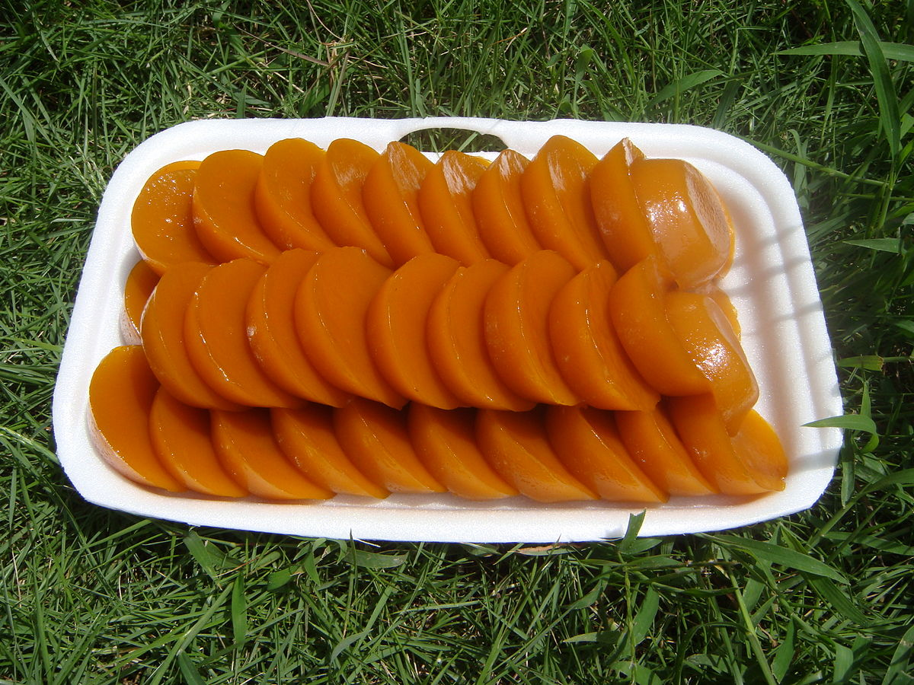

|  |
DescriptionPuto cuchinta or kutsinta is a type of steamed rice cake found throughout the Philippines. It is made from a mixture of tapioca or rice flour, brown sugar and lye, enhanced with yellow food coloring or annatto extract, and steamed in small ramekins. Ingredients1 1/2 cup rice flour Procedure1. In a mixing bowl, combine all the dry ingredients starting from the rice flour, all-purpose flour, and brown sugar then mix all the ingredients. PriceP60 / pack |
||
| Previous | Next |